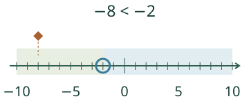
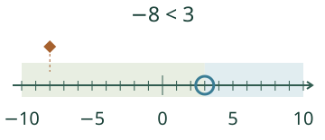

Aava vertaa paikkoja. Kummalla puolella −2:ta oma piste on?
Paikka vai etäisyys?
Vertailukohta voi olla negatiivinen

Suurempi ei tarkoita kauempana nollasta

Ennusta
Jos oma piste on −1 ja vertailukohta 0, riittääkö yksi väli oikealle tekemään omasta luvusta suuremman?
Paljasta ajatus
Ei vielä: ensin päädytään samaan pisteeseen 0.
Käyttöraja, jonka täytyy täyttyä
Sovitaan varaston lämpötilan ehdoksi lukema pienempi kuin −2 °C. −5 °C kelpaa, −2 °C ei: raja on tiukka. −1 °C on lämpimämpi mutta rajan oikealla puolella. Tämä on sovittu harjoitusehto, ei oikean tuotteen säilytysohje.
Rakenna vastaus
Lisää tutkittavaa
Kirjoita ketju −8 < −3 < 0 < 2. Käännä lukusuoran lukusuunta ja kirjoita sama ketju >-merkeillä. Muuttuivatko lukujen paikat vai vain tapa, jolla luet niitä?
Lopuksi: löydä kaksi eri negatiivista lukua, jotka ovat suurempia kuin −4. Miksi nolla ei ole negatiivinen vaihtoehto?
Opettajalle ja ilman ruutua
Luokat 7–9. Vaadittu M-NEG-02; M-NEG-03 on vahva tuki, ei uusi kova portti. Kohde on järjestys lukusuoralla, ei etäisyyslaskenta tai pelkkä miinusmerkin tunnistus. Mallissa ja avoimissa lukuparitehtävissä kokonaisluvut −10…10. Molemmat luvut ovat samalla asteikolla ja yksiköllä. Kuvan sinivihreät alueet eivät ole uusia geometrisia käsitteitä, vaan vertailukohdan puolet.
Piirrä tasavälinen paperisuora. Oppilas voi merkitä vertailukohdan ja keksiä useita sen vasemmalla/oikealla olevia lukuja, myös negatiivisia. Pyydä sama vertailu molempiin lukusuuntiin tai tiukan rajan ja yhtäsuuruuden ero. Mallin käyttö on valinnaista eikä nimeämistä, puhetta tai määrättyä reittiä vaadita. Kelpaavia pareja hyväksytään yleisen ehdon perusteella, ei mallivastauslistasta. Numeerinen tarkistus ei todista itsenäistä strategiaa, viivästettyä tai muodollista hallintaa; ei henkilökohtaista historiaa, aikarajaa tai palkintoa. Syöttö tukee kokonaislukuarvoista tavallista desimaalitekstiä, etumerkkiä ja ylimääräisiä nollia, enintään128 merkkiä; ei lausekkeita tai murtolukuja.